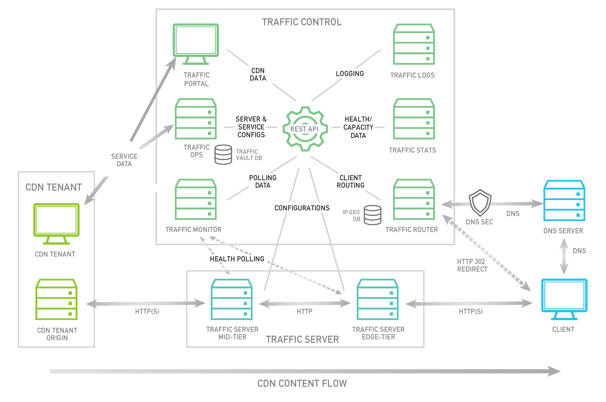

Introduction¶
Traffic Control is a caching server control plane application which is used to aggregate caching servers into a Content Delivery Network (CDN). In principle, a CDN may be implemented with any HTTP caching proxy. The caching software chosen for Traffic Control is Apache Traffic Server (ATS). Although the current release only supports ATS as a cache, this may change with future releases.
Traffic Control was first developed at Comcast for internal use and released to Open Source in April of 2015. Traffic Control moved into the Apache Incubator in August of 2016.
Traffic Control implements the elements illustrated in green in the diagram below.
- Traffic Ops
Traffic Ops is used to configure caching servers and CDN delivery services. It also contains APIs used to access CDN data. Traffic Ops provides a UI for interacting with the CDN(s) that it manages, which is considered legacy as of Traffic Control 2.2, deprecated in 3.0, and will be removed by 4.0.
- Traffic Router
Traffic Router is used to route clients requests to the closest healthy cache by analyzing the health, capacity, and state of the caching servers and relative distance from each cache group to the location of the client.
- Traffic Monitor
Traffic Monitor does health polling of the caching servers on a very short interval to keep track of which servers should be kept in rotation.
- Traffic Stats
Traffic Stats collects real time traffic statistics aggregated from each of the caching servers. This data is used by the Traffic Router to assess the available capacity of each caching server which it uses to balance traffic load and prevent overload.
- Traffic Portal
Traffic Portal is a web application which leverages the Traffic Ops APIs to present CDN data through a web interface. As of Traffic Control 2.2, this is the recommended, official UI for the Traffic Control platform. In Traffic Control 3.x, the Traffic Ops UI has been deprecated, and it will be removed with the release of Traffic Control 4.0.
- Traffic Logs
Traffic Logs is currently under construction and is intended to aggregate Traffic Server request/response logs as well as other server logs. Logs will be parsed and indexed for search.
In the next sections each of these components will be explained further.